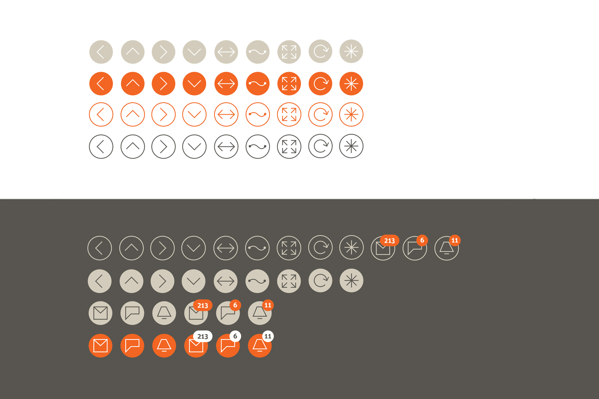
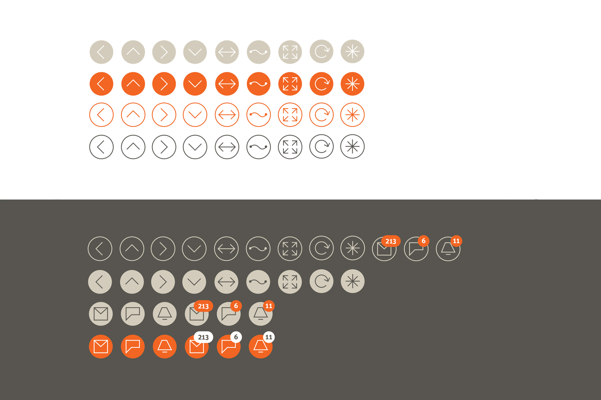

Solution
Bloomberg Terminal currently uses a black background over which a high density of information is displayed in white and grey text. Could it be a better reading experience if it was designed with a white background, similar to that of a newspaper? What if it were to have a more brighter, crisper interface with a modern, screen-optimized font?